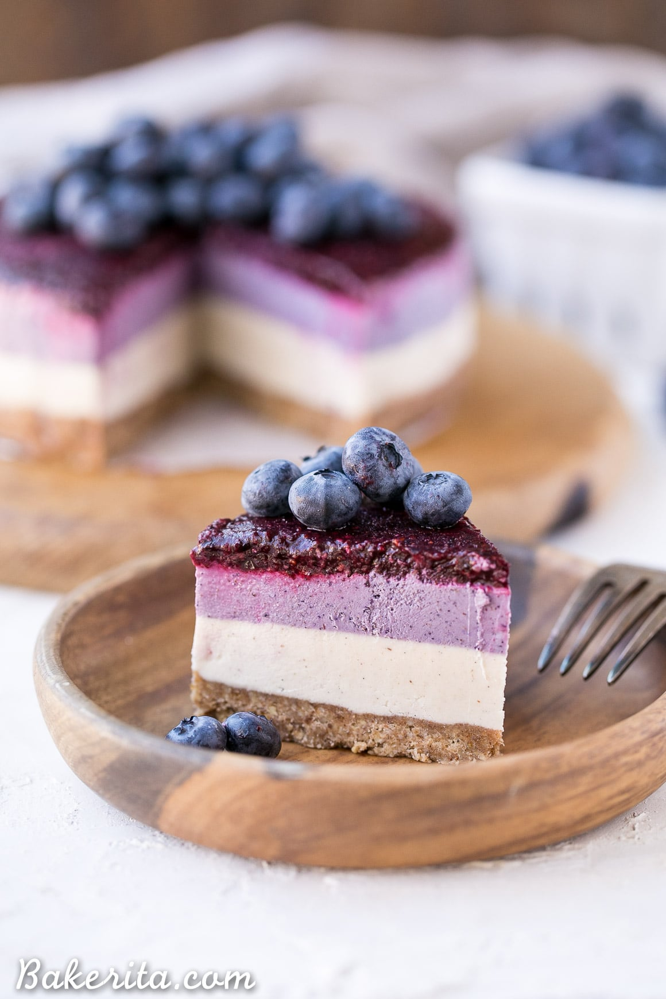

Layered Blueberry Vegan Cheesecake

Layered Blueberry Vegan Cheesecake
This is a no-bake, simple to make, Paleo and gluten-free desert that will keep you coming back for more!
Ingredients
For the crust
- 1/2 cup raw pecans
- 1/2 cup almond flour
- 2 pitted dates
- 2 tablespoons coconut oil
- 1 tablespoon cinnamon
- 1/4 teaspoon kosher salt
For the cheesecake
- 2 cups raw cashews, soaked in cold water for at least four hours or preferably overnight
- 1/2 cup canned coconut milk, shaken
- 1/4 cup coconut oil, melted and cooled (use refined coconut oil if you want no coconut flavor)
- 1/3 cup pure maple syrup
- 2 tablespoons fresh lemon juice
- 1 tablespoon vanilla extract or ½ teaspoon vanilla bean powder
- 1/4 cup freeze-dried blueberries
For the blueberry layer
- 1 cup fresh or frozen blueberries, thawed, if frozen
- 1 tablespoon fresh lemon juice
- 1 tablespoon chia seeds